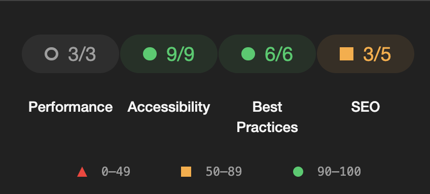
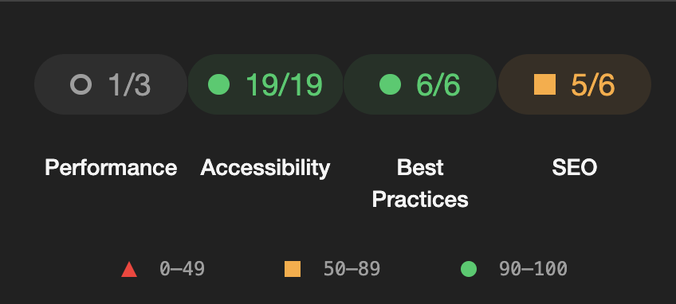
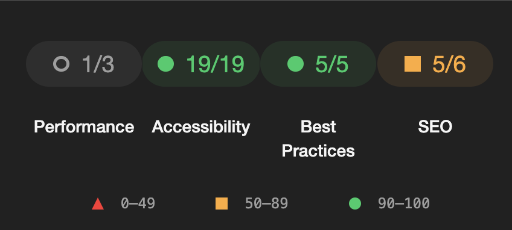

What does accessibility mean for a website?
Accessibility for a website is the ability for everyone to access and use it, despite disabilities.
The reason we strive for accessibility on website, is because it makes information more open for everyone.
Which is increasingly important in a society that is moving more and more online such as our own.
How do you measure accessibility?
For our automated tests we used google lighthouse.
Not only is lighthouse built into the chrome browser, but it was also a fantastic tool for us to create a foundation to bounce off.
Using lighthouse, we got direct feedback on what we should and shouldn’t do to increase the accessibility.
Our road towards accessibility
When we first started making the websites we threw the div element everywhere, we weren’t as concerned for accessibility when we built out the structure of our website.
However, just like any process, we iterated and refined our websites.
This came in the form of changing the ocean of div elements into native elements that are meant for the content within, which also came with the benefit of increasing the accessibility of the content.
Below are two pictures that show one of the small changes that we made.
Other ways we move towards accessibility was with the tags such as the alt tag, and aria labels.
The alt tag directly increased our accessibility score, yet there are still ways we can increase the accessibility.
With aria-labels and aria-content we can tell screen readers what sort of content a section of the page includes, or what a section of an article is about.
Our scores
When we first saw our score, we were a little shaken especially since we weren’t even done with our websites.
It felt like we had to think about everything.
So, we took a step back and talked, because the scores we got above didn’t meet our expectations.
-
In the picture above you can see the score for one of our pages.
However, the score for each of the other sites were pretty similar
After some talking, we concluded that even though the accessibility score should be in the forefront of our thoughts, it wouldn’t matter if we couldn’t get the sites done.
Therefore, we concluded that we should rather focus on accessibility after we got the sites somewhat done.
The cherry on top
After we got finished with making the sites accessible, we got to work trying to ruin them as much as possible.
We tried every browser we could think of.
Moreover, we even tried all imaginable combinations of screen sizes, yet nothing broke.
However, when it came to trying to navigate the sites with our keyboards, we found something.
We couldn’t use the drop-down menu.
The worst part, we couldn’t find out why.
Our solution ended up having to switch our drop-down button from a label element to a button element, and write some custom javascript code so it would work.
- Index/Home page
- Accessibility page
 Activity page
Activity page- github page
Above you can see our lighthouse score after all these changes.
The scores also reflect onto the pages on mobile
Even though the scores were perfect, we still needed to check each site manually.